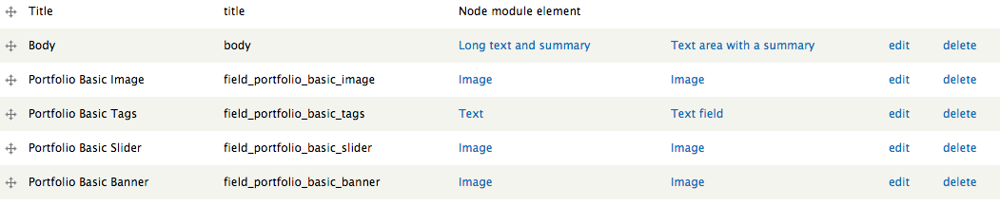
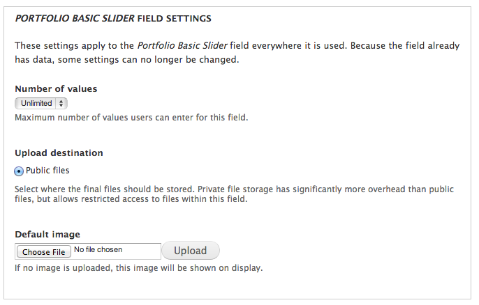
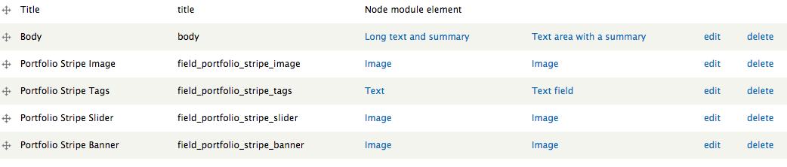
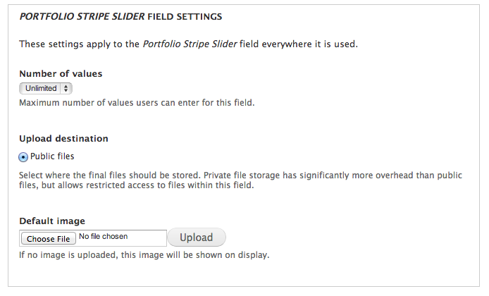
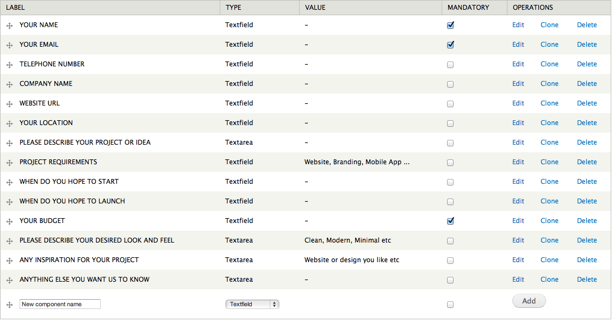

Overview
Montreal is a unique modern interactive creative Drupal 7 theme perfect for creative single portfolios or creative agencies. It offers fullscreen slideshow, parallax homepage scrolling, 6 different portfolio templates and much more. For theme support that cannot be found in this documentation, please visit our support forum. Once you have registered please contact us via the ThemeForest author page with your forum username so you can be granted posting rights.
Updated: 05/16/13
Author: Refaktor
Docs powered by: TOC
Original design by Hasan Ali
Installation
There are several ways Montreal can be installed. For existing sites that already have content, the first method will only involve the installation and activation of the theme. The second option includes a full Drupal 7 install with the same SQL database file used to create the theme demo. Please choose which installation method works best for you and follow the instructions.
Theme Only
Option 1:- Visit yourdomain.com/admin/appearance/install
- Upload the Montreal.zip file
- Enable and set to default
- Extract the Montreal.zip file and upload via FTP to /sites/all/themes
- Visit yourdomain.com/admin/appearance/
- Scroll down to "DISABLED THEMES" and set and enable Montreal
Full Drupal Install
The following steps are designed for people that have experience manually installing Drupal and importing databases. If you do not feel comfortable performing these steps yourself, contact your server administrator for help. NOTE this option is for a completely new Drupal install. Do not import the provided SQL file into an existing Drupal database or you will lose all of your data!
- Create a database for this installation of Drupal and import the SQL file that came with the theme.
- Follow these directions to create the settings.php file. Save this file somewhere so you can copy it over to the Drupal installation we have provided.
- Copy the entire contents of the Drupal_7 folder to the location on your web server where you want your site to be accessed. If you want your primary domain to point to your install of Montreal, copy everything to the root folder. If you want your site to be accessed as a subsection of your domain (for example: yourdomain.com/drupal) then simply rename the Drupal_7 folder to the desired name and upload to the root of your server. Also be sure to copy over the settings.php file mentioned in the previous step
- Login to your site with the username Steve and the password admin and visit /admin/people to change the admin username and password.
- Go through the Drupal configuration found in /admin/config options and update all the necessary information to reflect your website. Also be sure to visit /admin/config/media/file-system and change the Temporary Directory.
Quebec Sub-Theme
Montreal comes with a shell sub-theme called Quebec that you can use to make customizations to the style and template structure of the parent theme without having to modify the parent theme itself. This is useful if you plan on updating the parent theme as we release updates on ThemeForest. If you performed the full install you will already see Quebec in the list of themes available. If you did the standalone install you can find the Quebec.zip file in the root of the download files and you can install it like any other theme.
There is an empty stylesheet already defined which is /css/custom.css (inside the Quebec folder). Use this file to add all of the custom CSS that you plan on using. You can also copy any template file from the /montreal/templates folder into the /quebec/templates folder and it will listen to the sub-themes template file first. This will allow you to update the parent theme as we make updates without losing your customizations. Just pay attention to the changelog and compare the parent theme files with yours and make any adjustments as needed.
You will need to configure the sub-themes theme settings separately from the parent theme's, so visit /admin/appearance/settings/quebec to configure the theme settings for the sub-theme.
Menu
To edit your menu visit yourdomain.com/admin/structure/menu (pictured below)

Montreal uses the Main Menu. Press "List Links" to access the menu overview. From there you can add/remove links, and set the order.
NOTE:If you would like to use Montreal's built in drop down menu capability, make sure that the parent menu item (the one that indicates the drop down) has the "show as expanded" checkbox enabled.

Modules
You can find all of the modules in the full Drupal install that comes with the download files (drupal_7/sites/all/modules).
Required Modules
Recommended Modules
Montreal Content Data
If you used option 1 to install the theme on an existing install that already has content we recommend you use our Montreal Content Data module to create the additional content types, fields and Views needed to fully utilize the theme. You will find it in the root of the directory that contains the download files. This module is a custom Features module and will not run without it. We recommend copying all of the modules from the /drupal_7/sites/all/modules folder into your install if you do not already have them. After you have all the modules simply upload and activate the Montreal Content Data module and the content types, fields and Views will automatically be created.
Content Types
Montreal utilizes several different custom content types that all have their own custom theme template files that are used to achieve various layouts and styles. We highly recommend you use the Montreal Content Data plugin referenced above to automatically generate all these content types and their fields. We will also go over them one by one below and outline all of their corresponding fields.
Portfolio
Portfolio Basic
This is the Portfolio content type that is used for the vast majority of the different Portfolio layouts. To create this content type manually navigate to /admin/structure/types/add and enter "Portfolio Basic" into the title field (resulting in a machine name of portfolio_basic). You can enter a description if you like and all the default settings are sufficient. Next navigate to /admin/structure/types/manage/portfolio-basic/fields add all of the field items seen in the image below:
Basic Image
This is the image that appears on the Portfolio view page (does not appear on the single item page). We recommend an image size of 590 by 300. The machine name must read "field_portfolio_basic_image" and the default settings are fine.
Basic Tags
These are descriptive tags that appear on various places depending on the Portfolio template they are using. Separate them by commas, example: WEB DESIGN, UI, UX. The machine name must read "field_portfolio_basic_tags" and the default settings are fine.
Basic Slider
These images appear in the image slider on the single item view of the portfolio item. We recommend an image size of 700 by 500. The machine name must read "field_portfolio_basic_slider" and we recommend that you set the number of values allowed to unlimited (when editing this field item scroll to the bottom to find this setting, see image below).
Basic Banner
This is an optional image banner that if used gives the single item the appearance of the Item Wide template. We recommend that this banner be 1950 by 500 (can be shorter if you like). The machine name must read "field_portfolio_basic_banner" and the default settings are fine.
Portfolio Stripe
This is the Portfolio content type that is used for the vast majority of the different Portfolio layouts. To create this content type manually navigate to /admin/structure/types/add and enter "Portfolio Stripe" into the title field (resulting in a machine name of portfolio_basic). You can enter a description if you like and all the default settings are sufficient. Next navigate to /admin/structure/types/manage/portfolio-basic/fields add all of the field items seen in the image below:
Stripe Image
This is the image that appears on the Portfolio view page (does not appear on the single item page). We recommend an image size of 225 by 960. The machine name must read "field_portfolio_stripe_tags" and the default settings are fine.
Stripe Tags
These are descriptive tags that appear on various places depending on the Portfolio template they are using. Separate them by commas, example: WEB DESIGN, UI, UX. The machine name must read "field_portfolio_stripe_image" and the default settings are fine.
Stripe Slider
These images appear in the image slider on the single item view of the portfolio item. We recommend an image size of 700 by 500. The machine name must read "field_portfolio_stripe_slider" and we recommend that you set the number of values allowed to unlimited (when editing this field item scroll to the bottom to find this setting, see image below).
Stripe Banner
This is an optional image banner that if used gives the single item the appearance of the Item Wide template. We recommend that this banner be 1950 by 500 (can be shorter if you like). The machine name must read "field_portfolio_stripe_banner" and the default settings are fine.
Page
Aside from the basic page that comes standard with all Drupal installs, Montreal uses two additional content types for handling page content. Neither of which require any additional fields. Below we will outline each content type, their associated theme templates and how they are used in the demo.
Blank Page
This is a content type designed to use with full HTML and PHP code. There are no extra wrappers in the theme template that controls the output of this page and is used for several pages on the demo such as the about page.To create this content type manually navigate to /admin/structure/types/add and enter "Blank Page" into the title field (resulting in a machine name of blank_page). The following theme files are associated with this template:- /templates/page--node--blank-page.tpl
- /templates/node--blank-page.tpl
Stripe Page
This is a full width page with a white background and a stripe border at the top. This is used on several pages on the demo such as the project planner. To create this content type manually navigate to /admin/structure/types/add and enter "Stripe Page" into the title field (resulting in a machine name of stripe_page).The following theme files are associated with this template:- /templates/page--node--stripe-page.tpl
- /templates/node--stripe-page.tpl
Theme Settings
Montreal includes a powerful set of theme settings that allow you to configure many aspects of your site. They are organized in a series of tabbed menu items each with their own set of options. Simply click on the option heading to expand the full set of options. The Montreal theme options can be accessed by visiting yourdomain.com/admin/appearance/settings/montreal. All options have default values set, but you should go through each one and adjust them to your liking.
Front Page
By default Montreal uses a custom front page template that features several custom sections including the image slider. All of these sections are fully customizable and can also be disabled. You can use the theme settings to enable/disable any of these sections and set any necessary options. For full control of the front page template you can manually edit /includes/front-page.php
Image Slider
Montreal uses the Supersize slider for the front page to offer the full height sliding images inside the main slider area and inside the highlight section. We have provided some simple theme settings to control the slider, or you can manually edit /includes/front-page.php to fully customize the slider. The jQuery call at the bottom of page--front.tpl controls all aspects of the slider, and to call your own images without using the theme settings simply change the "slides" attribute as follows:
slides : [ // Slideshow Images
{image : '/path/to/img.jpg'},
{image : '/path/to/img.jpg'},
{image : '/path/to/img.jpg'},
{image : '/path/to/img.jpg'}
],
Recent Projects
The recent projects section is designed to showcase recent portfolio items in a carousel (see the Portfolio section of these docs for instructions on how to set up your portfolio items). This section utilizes a custom view template called node--view--recent-projects--block.tpl to achieve the look and feel seen on the demo. To properly use this section, make sure you have set up some portfolio items as described in the "Portfolio" section of the documentation. Once you have some portfolio items, either create a new view called Recent Projects (machine name must be recent_projects) of Portfolio Basic content (see the Portfolio documentation below for more info) content with an unformatted list of full content or use the Montreal Content Data module found in the root folder of the download files to automatically create all the content data for you.
Highlight
The Highlight section allows you to advertise a specific page or aspect of your site and also displays the main slider background in a parallax scrolling effect. The settings for the Highlight section are in the Front Page tab of the theme settings. You can enter your own text and even include HTML.
Recent Posts
The recent posts section is a block region designed to showcase your site's most recent blog/article posts. Montreal uses a custom view template called node--view--front-page-blog--block.tpl to achieve the look and feel of this section seen on the demo. To properly use this section, either create a new view called Front Page Blog (machine name must be front_page_blog) with the desired number of blog/article teasers, or use the Montreal Content Data module found in the root folder of the download files to automatically create all the content data for you.
Twitter Feed
This section will display the most recent Tweet for the Twitter handle you specify. Simply use the Twitter Feed option in the theme settings(/admin/appearance/settings/montreal) to set the handle.
Update:As of June 13th the old 1.0 version of the Twitter API was discontinued. Because of this some changes had to be made to this section and some additional settings are needed for it to function correctly. Visit https://dev.twitter.com/apps and login with your Twitter account. You will have to make an App in order to receive the necessary OAuth keys required for the Twitter feed. Once you have them you can enter them into the theme settings.
Portfolio Templates
One of the most unique and powerful features of Montreal is the different Portfolio template choices that are available. There are six different templates and two varieties of the single portfolio item. All of the different views can be seen on the demo and we encourage you to look through them all to see which one(s) you may like to use.
Below we will go over each of the different portfolio templates and the two single item templates and outline everything you need to know about how to properly use them on your site. If you did not do the full Drupal 7 install the only module you will need is Views, but we also highly recommend using the Montreal Content Data module to create all of the content types, fields and views for you. See the Modules section of the documentation further above this page for more information.
Basic
This is the default Portfolio template and it uses the Portfolio Basic content type (see the Content Types section of the documentation for more info). You can see an example of this Portfolio template on our demo page. The following theme files are associated with this template:
- /templates/page--portfolio.tpl
- /templates/node--view--portfolio--page.tpl
This template requires a Views page called "Portfolio" that calls full content from the Portfolio Basic content type. You can either use the Montreal Content Data module to create the view or you can use the export code found in /views_exports/portfolio.txt. Visit /admin/structure/views/import and import the entire contents of that file and the View will be created for you.
Drag
This template uses a click and drag (or swipe gesture on touch devices) to navigate through the items. You can see an example of this template on our demo page. The following theme files are associated with this template:
- /templates/page--portfolio-drag.tpl
- /templates/node--view--portfolio-drag--page.tpl
This template requires a Views page called "Portfolio Drag" that calls full content from the Portfolio Basic content type. You can either use the Montreal Content Data module to create the view or you can use the export code found in /views_exports/portfolio_drag.txt. Visit /admin/structure/views/import and import the entire contents of that file and the View will be created for you.
Stripe
This template uses a click and drag (or swipe gesture on touch devices) similar to the Drag template but with tall and narrow images that expand slightly on hover. You can see an example of this template on our demo page. The following theme files are associated with this template:
- /templates/page--portfolio-stripe.tpl
- /templates/node--view--portfolio-stripe--page.tpl
This template requires a Views page called "Portfolio Stripe" that calls full content from the Portfolio Stripe content type. You can either use the Montreal Content Data module to create the view or you can use the export code found in /views_exports/portfolio_stripe.txt. Visit /admin/structure/views/import and import the entire contents of that file and the View will be created for you.
Black
This template is a variation of the Portfolio Basic template with a black background and some cool hover effects on the items. You can see an example of this template on our demo page. The following theme files are associated with this template:
- /templates/page--portfolio-black.tpl
- /templates/node--view--portfolio-black--page.tpl
This template requires a Views page called "Portfolio Black" that calls full content from the Portfolio Basic content type. You can either use the Montreal Content Data module to create the view or you can use the export code found in /views_exports/portfolio_black.txt. Visit /admin/structure/views/import and import the entire contents of that file and the View will be created for you.
White
This template is a variation of the Portfolio Basic template with a white background and some cool hover effects on the items. You can see an example of this template on our demo page. The following theme files are associated with this template:
- /templates/page--portfolio-white.tpl
- /templates/node--view--portfolio-white--page.tpl
This template requires a Views page called "Portfolio White" that calls full content from the Portfolio Basic content type. You can either use the Montreal Content Data module to create the view or you can use the export code found in /views_exports/portfolio_white.txt. Visit /admin/structure/views/import and import the entire contents of that file and the View will be created for you.
Block
This template is a variation of the Portfolio Basic template that is similar to the Portfolio Black template but with the items very close together in a grid. You can see an example of this template on our demo page. The following theme files are associated with this template:
- /templates/page--portfolio-block.tpl
- /templates/node--view--portfolio-block--page.tpl
This template requires a Views page called "Portfolio Block" that calls full content from the Portfolio Basic content type. You can either use the Montreal Content Data module to create the view or you can use the export code found in /views_exports/portfolio_block.txt. Visit /admin/structure/views/import and import the entire contents of that file and the View will be created for you.
Single Basic
This is the default template that is used for the single portfolio items. You can see an example of what it looks like on our demo site here. It features an image slider where you can show off multiple images for that portfolio item and will display the rest of the content you enter into the node body. The following theme files are associated with this template:
- /templates/page--node--portfolio-basic.tpl
- /templates/node--portfolio-basic.tpl
For more information about properly setting up your Portfolio items please refer to the Content Types portion of this documentation.
Single Wide
This is a variation of the default template that is used for the single portfolio items and features a large banner image at the top. You can see an example of what it looks like on our demo site here. It also features an image slider where you can show off multiple images for that portfolio item and will display the rest of the content you enter into the node body. The following theme files are associated with this template (same as Single Basic):
- /templates/page--node--portfolio-basic.tpl
- /templates/node--portfolio-basic.tpl
For more information about properly setting up your Portfolio items please refer to the Content Types portion of this documentation.
Project Planner
Montreal utilizes the Webform module and a custom template called webform-form.tpl to create the Project Planner seen on the demo. We will outline step by step below how to recreate this feature if you did not do the full Drupal 7 install:
1. Install and activate the Webform module and configure it for use on the Stripe page content type (refer to the Content Types portion of this documentation if you don't already have this content type).2. Navigate to /node/add/stripe-page (refer to the Content Types portion of this documentation if you don't already have this content type), give it a title and copy the contents of /examples/project_planner.php (feel free to modify this to your liking) into the node body. Hint: if you haven't already activate the PHP filter module and set the text format to PHP Code. This has less formatting issues than even the Full HTML option.
3. After you've saved the initial page content click on the Webform tab and start setting up the form to your liking. If you would like to follow along with the demo settings refer to the image below:

4. After you've set up your form you can click through the emails and form settings tabs to configure the behavior of the form to your liking. If you would like to duplicate the functionality on the demo, create a new page called Thank You (use the example code from /examples/thanks.php) and under the form settings tab on your Project Planner page use that page URL in the Redirection location option to redirect users to that page after they fill out the form.
Notes (posts)
If you would like to use Article (recommended) or Blog posts on your site Montreal comes equipped with several templates that modify the look and feel of the posts list and single items. The default post page on the demo can be seen here, a single post can be seen here and an alternate list format can be seen here. There are no extra content types or custom fields that you need to set up and we will cover each template below:
Default Notes View
The default page seen on the demo here is a View page of the Article content type. You can either use the Montreal Content Data module to create the view or you can use the export code found in /views_exports/notes.txt. Visit /admin/structure/views/import and import the entire contents of that file and the View will be created for you. The following theme files are associated with this template:
- /templates/page--notes.tpl
- /templates/node--view--notes--page.tpl
Note List View
The Note List is an alternative template for displaying a list of your posts and is also a View page of the Article content type. You can either use the Montreal Content Data module to create the view or you can use the export code found in /views_exports/note_list.txt. Visit /admin/structure/views/import and import the entire contents of that file and the View will be created for you. The following theme files are associated with this template:
- /templates/page--notes-list.tpl
- /templates/node--view--notes-list--page.tpl
Note Single
The Note Single is simply the layout of a single post of the Article or Blog content type on your site (we recommend using Article). The following theme files are associated with this template:
- /templates/node--article.tpl
- /templates/page--node--article.tpl
- /templates/node--blog.tpl
- /templates/page--node--blog.tpl
Footer
Montreal's footer is split up into two parts so we will discuss each one separately. The main footer is split up into 4 block regions which can be used to display any information you want. These four blocks are Footer Box 1, Footer Box 2, Footer Box 3 and Footer Box 4.
The secondary footer has a full width block region that appears below the standard 4 box footer.
You can also hide either of the footer regions by using the theme settings.
Block Regions
Montreal features 10 block regions where you can add your own custom content. Visit yourdomain.com/admin/structure/block to add your own content to the defined block regions. Press "Add Block" to create a new custom blog, or select an existing block from the Disabled list below the defined block regions.
Extras
Code Examples
There are a variety of code examples in the /examples folder that correspond to various pages on the demo. You can use these as tools to replicate the visual appearance and functionality seen on the demo site.
Google Maps
The contact page on the demo site uses a Google Maps plugin (see /examples/contact.php). Below is the Javascript call that powers the map
var map;
$(document).ready(function(){
prettyPrint();
map = new GMaps({
div: '#map',
lat: 48.8584,
lng: 2.2946,
});
map.addMarker({
lat: 48.8584,
lng: 2.2946,
title: 'MONTREAL Html Template',
click: function(e){
if(console.log)
console.log(e);
alert('You clicked in this marker');
}
});
});
//]]>
The map is then called with an empty div with the ID map. You can use a website like the following to get the latitude and longitude needed to use the Google Maps plugin.
Thank You
Thank you very much for purchasing the Montreal responsive Drupal 7 theme. Once again if you have any issues or feedback please connect via the ThemeForest author page. Enjoy using Montreal!
© 2013 Refaktor.